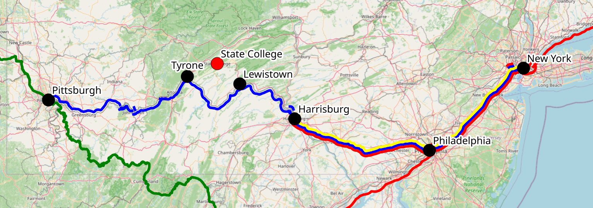
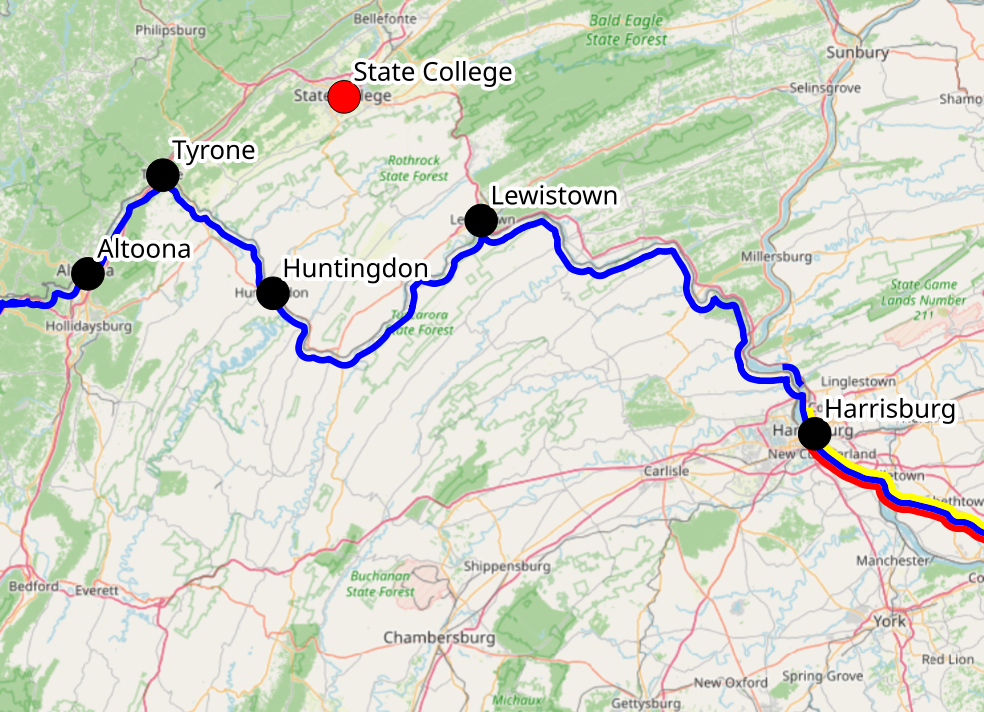

State College can be a bit difficult to reach by any means other than a long drive or an expensive flight. Happily, several other options are available: intercity bus service remains fairly robust, and Amtrak trains are not too far away. This page is an attempt to aggregate the various options for getting to and from town. Please report any errors, omissions, updates, or suggestions.
There are currently four companies operating regular intercity bus service to and from State College: Fullington Trailways, Greyhound, Flixbus, and Agee Bus (often known as “Gotobus”, after the platform where its tickets are available). In total there are about a dozen daily arrivals and departures, more than there are flights! Tickets can be booked at the websites of the respective companies; note that Flixbus is now the corparate parent of Greyhound, and Greyhound and Fullington cross-list tickets between their sites, so all three of these lines can be booked through any of the three sites. Agee Bus tickets can only be purchased at gotobus.com.
Daily departures:
| Departure | Operator | Destination | Arrival | Stops and notes |
|---|---|---|---|---|
| 1:55 AM | Flixbus | New York | 6:30 AM | |
| 2:50 AM | Agee Bus | New York | 6:50 AM | |
| 6:00 AM | Fullington | Pittsburgh | 11:00 AM | continues to PGH |
| 9:00 AM | Fullington | New York | 1:45 PM | |
| 9:00 AM | Fullington | Philadelphia | 1:30 PM | |
| 9:45 AM | Fullington | Wilkes-Barre | 1:10 PM | |
| 10:25 AM | Flixbus | New York | 4:25 PM | Harrisburg |
| 12:35 PM | Greyhound | New York | 6:45 PM | Harrisburg |
| 1:25 PM | Greyhound | Pittsburgh | 6:10 PM | |
| 1:50 PM | Greyhound | Philadelphia | 6:15 PM | Harrisburg |
| 3:40 PM | Flixbus | New York | 10:20 PM | |
| 4:25 PM | Flixbus | Chicago | 7:25 PM | Indianapolis, Columbus, Pittsburgh |
| 7:20 PM | Fullington | Pittsburgh | 9:50 PM |
Daily arrivals:
| Arrival | Operator | Origin | Departure | Stops and notes |
|---|---|---|---|---|
| 1:50 AM | Flixbus | New York | 9:30 PM | EWR |
| 8:45 AM | Fullington | Pittsburgh | 6:15 AM | |
| 10:20 AM | Flixbus | Chicago | 7:30 AM | Indianapolis, Columbus, Pittsburgh |
| 1:15 PM | Greyhound | Philadelphia | 9:00 AM | |
| 1:40 PM | Greyhound | Pittsburgh | 9:20 AM | |
| 2:00 PM | Fullington | Philadelphia | 1:30 PM | Harrisburg |
| 4:20 PM | Flixbus | New York | 10:45 AM | Newark Airport, Allentown, Harrisburg |
| 5:15 PM | Fullington | Wilkes-Barre | 1:10 PM | Lock Haven, Williamsport |
| 6:50 PM | Flixbus | New York | 12:00 PM | |
| 7:05 PM | Fullington | New York | 2:05 PM | |
| 7:20 PM | Greyhound | New York | 1:00 PM | |
| 8:10 PM | Fullington | Pittsburgh | 3:30 PM | from PGH |
| 9:25 PM | Agee Bus | New York | 5:00 PM |
[ TODO: I need to figure out which of the NYC services actually stop in Philly, H’burg, or EWR. I have also not really checked which days of the week all these things operate.]
Fullington and Greyhound routes use the bus station downtown, located just off North Atherton near the Westgate building. Flixbus only serves the airport, so you need to arrange transport from the airport; it’s about a 15-minute drive to campus, and an Uber will run about $25. Agee Bus drops in the Walmart parking lot on North Atherton; downtown is then a short CATA ride away. Fullington, Greyhound, and Flixbus operate standard passenger coaches, with a bathroom on board; Agee Bus runs (TODO: at least sometimes?) smaller 10-seater vans, which are unmarked on the outside.
In addition to these regularly scheduled routes, Fullington operates some sporadic “tour” routes designed to give you a weekend in a big city. If you’re hoping to go to NYC or Philly and are flexible on the dates, these are a good option. These run only four or five weekends each year. For example, the Big Apple Express leaves State College at 4:15 PM on Friday, arriving New York at 9:15 PM. The return leaves NYC at 10:00 PM on Sunday, arriving in State College at 2:45 AM.
[TODO: Fullington has never made it easy to find the dates of these routes without searching every single Friday. I probably need to call them. I have a sinking fear that these routes are now defunct and have been replaced with the single-day tour options.]
Many additional bus services are available around the times of Penn State breaks (Thanksgiving, Winter, and Spring), to help students get home. All of these are restricted to current PSU students.
[ TODO: There is also OurBus, whose operations are obscure to me. Basically you can vote for routes on a particular date and time, and if enough people do, they will charter a bus. I am told this actually succeeds sometimes around PSU breaks, but I don’t think there is any regular service. More information needed. ]
While the ridesharing bulletin boards are a thing of the past, you might still be able to find someone to share a ride, especially around PSU breaks. Some options:
For many years, Megabus ran affordable and frequent routes to State College. However, Megabus ceased to operate buses locally following a 2024 bankruptcy. The Megabus brand and website are now owned by a holding company, the Renco Group, which continues to sell tickets at megabus.com. These are just Fullington tickets, and I am not aware of any compelling reason to book through megabus.com instead of directly through Fullington.
State College does not have a train station, so you will need to get to another city to catch the train – the closest ones, in Tyrone and Lewistown, are each about a 35 minutes’ drive way. There are four Amtrak routes most useful when traveling from State College, of which two actually run through Central PA:

If you’re headed east, you have basically two options: either catch the train in Lewistown (35 minutes’ drive; but there is only one daily train), or make the longer trip to Harrisburg (90 minutes from here, but with more or less hourly service to NYC). If you’re headed west, the sensible option is generally to catch the train in Tyrone (35 minutes). Since the routes are a bit circuitous in the vicinity of State College, a map of the nearby stations may clarify the options:

Huntingdon and Altoona stations are also nearby and could make sense depending on your starting point. Note that Altoona is the only staffed station in the vicinity, so if you want to check bags on the Pennsylvanian, you need to go here or Harrisburg. The stations in Lewistown, Tyrone, and Huntingdon are more akin to bus shelters by the tracks.
A final option is the “Thruway bus” service operated by Amtrak. You can buy a ticket directly from “State College” (station code: STC) on amtrak.com. What you receive is a single booking that puts you on bus from downtown State College to a train station, where you transfer to the next train. The bus is actually one of the Greyhound or Fullington routes enumerated above, not a special bus operated by Amtrak. If you’re headed east, the transfer takes place in Harrisburg, where the bus and train stations are the first and second floors of the same building, so transferring is very simple. Booking both tickets through Amtrak entitles you to a replacement ticket in case you miss the connection, though low bus frequencies mean you may be stuck awhile.
The daily options to reach New York are the following. Note that different routes use different stops in both State College and New York; pay attention when booking.
| Operator | Departure | Arrival | Duration | Notes |
|---|---|---|---|---|
| Flixbus | 1:55 AM | 6:30 AM | 4:35 | |
| Ageebus | 2:50 AM | 6:50 AM | 4:00 | |
| Fullington | 9:00 AM | 1:45 PM | 4:45 | |
| Flixbus | 10:25 AM | 4:25 PM | 6:00 | |
| Amtrak | 11:28 AM | 4:50 PM | 5:22 | Departure from Lewistown |
| Greyhound | 12:35 PM | 6:45 PM | 6:10 | |
| Amtrak Thruway | 2:00 PM | 8:12 PM | 6:12 | Bus to train transfer in Harrisburg |
| Flixbus | 3:40 PM | 10:20 PM | 6:40 |
Inbound to State College
| Operator | Departure | Arrival | Duration | Notes |
|---|---|---|---|---|
| Amtrak Thruway | 7:17 AM | 1:15 PM | 5:58 | Train to bus transfer in Harrisburg |
| Flixbus | 10:45 AM | 4:20 PM | 5:45 | |
| Amtrak | 10:52 AM | 3:45 PM | 4:53 | Arrival in Lewistown |
| Flixbus | 12:00 PM | 6:50 PM | 6:50 | |
| Greyhound | 1:00 PM | 7:20 PM | 6:20 | |
| Fullington | 2:05 PM | 7:05 PM | 5:00 | |
| Agee Bus | 5:00 PM | 9:25 PM | 4:25 | |
| Flixbus | 9:30 PM | 1:50 AM | 4:20 |
There is only one way to get to DC without a long detour through Philly: take the 10:25 AM Flixbus from the State College airport, then transfer to Greyhound in Harrisburg. Trip duration is 5:20. The return is more awkward, requiring a second transfer in Baltimore: check greyhound.com for schedules.
There are two realistic options to get to Chicago, which is the hub for Amtrak’s major routes across the midwest and to the west coast. (Well, OK, I guess you could fly to Chicago.)
In the past there have been bus routes directly from State College to JFK airport. These no longer exist; you have to use the Airtrain and the subway to get between JFK and Manhattan. The situation at LGA is similar.
Several of the Flixbus routes listed above (with origin “New York”) stop at Newark Airport. Consult flixbus.com for schedules.
While there is no service directly from the airport, it’s easy to get to from the airport to the train station on a direct SEPTA train.
One daily Fullington route each way offers direct service to PGH. The early morning Fullington route leaving State College at 6:00 AM continues to PGH after serving the main bus station. The Fullington route leaving Pittsburgh at 3:30 PM leaves PGH at 2:50 PM.
I cannot in good conscience recommend trying to get here by bus or train from BWI or IAD.